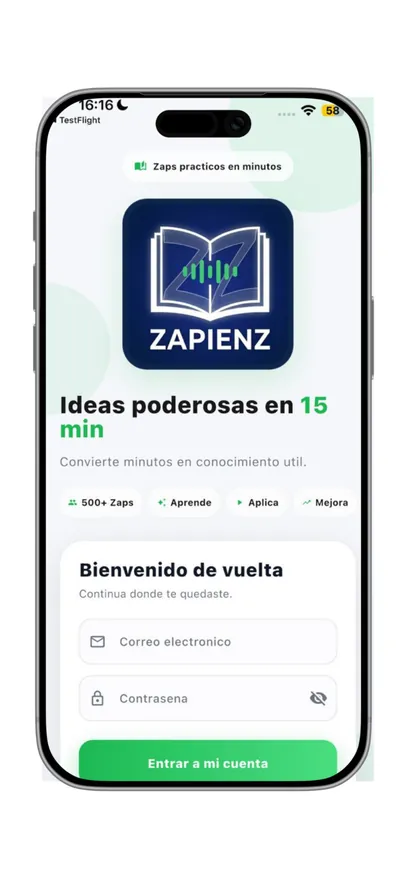
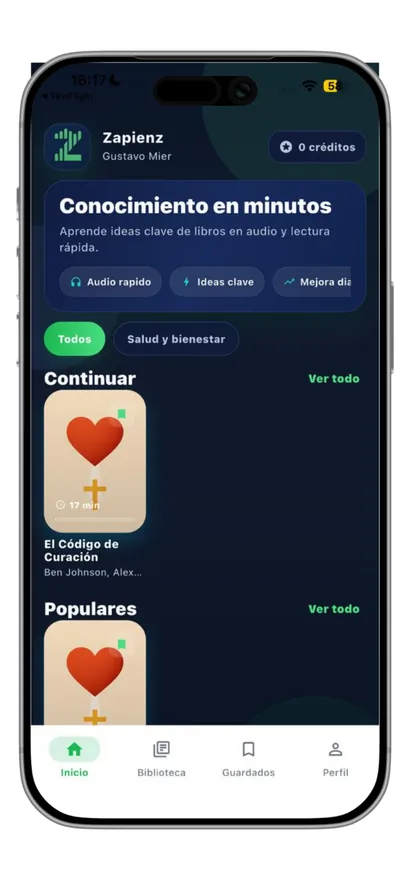
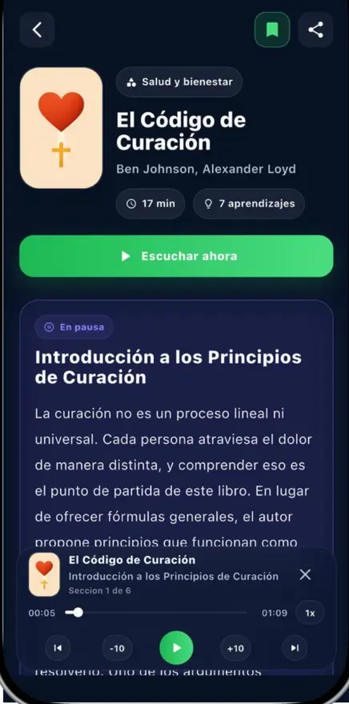

PASO 01
Lo abrimos entero
El libro completo, hasta la última idea. No la contraportada, no el índice: el libro.
305 Zaps · en español
Trescientas páginas leídas completas y compactadas en veinte minutos. Con la voz puesta, para que lo escuches donde estés.
Qué es Zapienz
Zapienz es una app de resúmenes de libros de no ficción en español. Cada título se lee entero y se compacta a lo que de verdad te llevarías: unos veinte minutos, en texto y en audio. Se abre en el celular, se escucha manejando y recuerda dónde te quedaste.
Lo decimos claro: los Zaps son interpretaciones educativas generadas con apoyo de inteligencia artificial a partir de obras publicadas. No sustituyen la obra original — la resumen para que decidas cuál sí vas a leer completa.
El catálogo entero está en español, pensado para lectores de Latinoamérica.
El mismo resumen se lee o se escucha, narrado de principio a fin. Tú decides cada día.
Psicología, negocios, filosofía, hábitos y más.
El catálogo no se queda quieto: se publican títulos nuevos con su audio listo.
El proceso
Tres pasos, siempre los mismos. Lo que cambia es el libro.
PASO 01
El libro completo, hasta la última idea. No la contraportada, no el índice: el libro.
PASO 02
Las ideas centrales y sus aprendizajes clave. Lo que de verdad te llevarías: veinte minutos.
PASO 03
El Zap se vuelve audio, narrado de principio a fin, y cabe en tu bolsillo.
El catálogo
Aquí enseñamos 28 títulos de muestra. El catálogo completo son 305, dentro de la app.
Las categorías de estos 28:
Dos formas del mismo Zap
El mismo resumen, dos maneras de tomarlo. La app guarda tu avance en las dos, así que puedes empezar leyendo en la fila del banco y terminar escuchando en el coche.
Amarillo · leer
Las ideas centrales del libro escritas para leerse de corrido, con sus aprendizajes clave al final.
Teal · escuchar
Audio de principio a fin. Para manejar, caminar, entrenar o lavar los trastes.



Lo que dicen quienes ya la usan
“Hoy en día los podcast me ayudado a aprender de una manera más rápida y diferente y sin duda esta aplicación lo ha hecho aún mejor, ya que al juntar la ideología de un podcast con el resumen de un libro , hace que puedas aprender de manera mas fácil sobre diferentes best sellers.”
“Súper práctica app, están buenísimos y súper completos los resúmenes. Es muy práctico escuchar el audio mientras voy manejado y los libros que tienen están muy interesantes ✨”
Reseñas publicadas por personas usuarias en el App Store de México, reproducidas tal cual. Ver la ficha en el App Store →
Planes
Para quien lee de vez en cuando.
Para quien sí quiere leer de verdad este año.
Los precios vigentes de cada plan se muestran dentro de la app, en tu moneda y con las condiciones del App Store.
Dónde y cuándo
En el App Store de México, para iPhone y iPad. La descarga es gratis.
Contenido en español, pensado para lectores de México y del resto de Latinoamérica.
A la hora que quieras: la app no cierra. El primer Zap dura veinte minutos y se descargan títulos nuevos cada semana.
Descárgala gratis y escucha el primero hoy. Veinte minutos, y ya sabrás si quieres el libro completo.
Descargar en el App Store